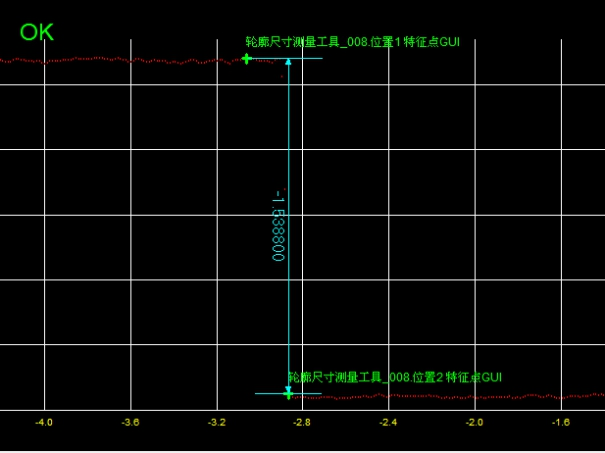

对输入的两个特征点之间的尺寸信息进行测量，图1所示为两个特征点之间的高度信息。

| 分类 | 参数名称 | 参数描述 |
|---|---|---|
| 属性窗口 | 尺寸 特征类型 | 轮廓数据的尺寸类型，以便计算两个特征点的距离或中点，分为4种：宽度、高度、欧氏距离、中点。 |
| 图像窗口 | 轮廓图像 | 显示待检测的轮廓图像。 |
| 检测区域 | 显示待检测区域。 | |
| 数据链 | 输入轮廓数据 | 输入待检测的轮廓图像的轮廓数据，该参数来源于截面生成工具的输出轮廓数据参数。 |
| 高级界面 | 无 | 无 |
| 分类 | 参数名称 | 参数描述 |
|---|---|---|
| 监视窗口 | 输入轮廓数据 | 输入待检测的轮廓图像的轮廓数据，包括轮廓点数，有效点数。 |
| 位置1特征点 | 第1个特征点的二维坐标信息。 | |
| 位置2特征点 | 第2个特征点的二维坐标信息。 | |
| 尺寸结果 | 两个特征点间的宽度/高度/欧氏距离/中点。 | |
| 执行结果 | 工具执行结果。 | |
| 执行时间 | 工具执行时间。 | |
| 图像窗口 | 轮廓图像 | 显示待检测的轮廓图像。 |
| 特征点、距离/中点 | 显示特征点结果，及两个特征点间的距离或中点。 | |
| 数据链 | 同监视窗口参数，供后续工具使用。 |
无
无
参见“\Samples\3D\深度图\3D测量工具.gvp”。